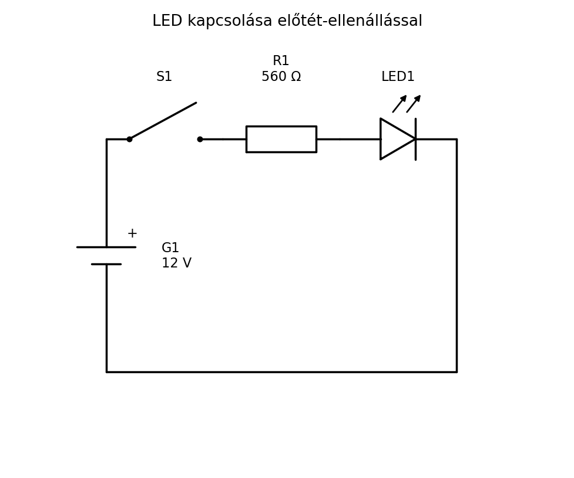

A dióda a villamosipar legkisebb, mégis az egyik legfontosabb „szelepe”. Ha LED-es jelzőlámpát szerelsz be, ha relé tekercsét vezérled, ha hálózati tápegységet javítasz, vagy ha egy motor vezérlésében szabadonfutó diódát keresel, mindig ugyanazzal a kérdéssel találkozol: merre engedi az áramot a dióda, és mekkora feszültségesést okoz közben. A rosszul bekötött vagy alulméretezett dióda egy kapcsolásban túlmelegedést, tönkremenő félvezetőt vagy akár a vezérlő tranzisztor károsodását is okozhatja. Ebben az alfejezetben a félvezető anyagok és a PN-átmenet viselkedéséből indulunk ki, majd eljutunk a dióda karakterisztikájáig és a gyakorlatban előforduló speciális diódafajtákig.
Vegyünk egy gyakori szerelői helyzetet: egy 12 V-os egyenáramú tápegységről szeretnél egy piros LED-et üzemeltetni. A LED is dióda, ezért csak egy irányban világít, és nyitóirányban a feszültségesése jellemzően 2 V körül van. Ha közvetlenül a 12 V-ra kötnéd, a maradék feszültség miatt akkora áram folyna át rajta, hogy a LED azonnal tönkremenne. Ezért kell vele sorba kötni egy előtét-ellenállást, amely az áramot a biztonságos értékre korlátozza.

Az ábra egy teljesen hétköznapi kapcsolást mutat: a tápegység pozitív sarkától a kapcsolón, az előtét-ellenálláson és a LED-en keresztül jutunk vissza a negatív sarokhoz. A LED mellett a rajzjelben a háromszög az áram irányát jelzi. A dióda tehát nem passzív alkatrész, hanem egyirányú vezetőként viselkedik, és ezt a viselkedést a félvezető anyagok tulajdonságai határozzák meg.
A félvezető anyagok – a gyakorlatban szinte mindig szilícium, régebben germánium – a vezetők és a szigetelők közötti átmenetet képviselik. Tiszta, úgynevezett intrinsic szilíciumban minden atom négy vegyértékelektronnal kapcsolódik a szomszédjaihoz, így szobahőmérsékleten alig vannak szabad töltéshordozók. A hőmozgás hatására azonban kis számú elektron kiszakadhat a kötésből, és maga után egy pozitív töltésű „lyukat” hagy. Ez a lyuk úgy viselkedik, mint egy pozitív töltéshordozó, mert a szomszédos elektronok átugorhatnak bele, így a lyuk maga is vándorol.
Definíció. A félvezető anyag olyan kristályos anyag, amelynek vezetőképessége a vezetők és a szigetelők közé esik, és amelynek töltéshordozó-száma szándékos szennyezéssel nagyságrendekkel megnövelhető.
A szennyezés (adagolás, dópolás) két alapvető félvezető típust hoz létre:
Önmagában az N vagy P típusú anyag még nem dióda; ahhoz a két réteget egymással érintkezésbe kell hozni.
Ha egy P és egy N típusú félvezető réteget egymás mellé helyezünk, akkor a határfelületen a többségi töltéshordozók diffúziója indul meg: a lyukak az N oldalra, az elektronok a P oldalra vándorolnak. A határ közelében azonban a donor- és akceptor-ionok visszamaradnak, és egy töltésszegény, úgynevezett kiürített réteg alakul ki. Ebben a rétegben beépített elektromos tér jön létre, amely a további diffúziót megakadályozza. A beépített feszültség szilíciumnál körülbelül 0,7 V, germániumnál körülbelül 0,3 V.
Definíció. A PN-átmenet a P és N típusú félvezető réteg közötti határfelület, amelyet kiürített réteg és beépített potenciálgát jellemez. Ez az átmenet adja a dióda egyirányú vezetési tulajdonságát.
A PN-átmenet viselkedése a rákapcsolt feszültség polaritásától függ:
A dióda áram-feszültség karakterisztikáját a Shockley-egyenlet írja le:
ahol a telítési áram (jellemzően – szilícium diódánál), az ideálissági tényező (jellemzően 1–2), és szobahőmérsékleten a termikus feszültség. A képletből látszik, hogy a nyitóirányú áram exponenciálisan nő a feszültséggel, míg záróirányban az áram gyakorlatilag értékhez tart.
A gyakorlati számításokban azonban nem az exponenciális egyenletet használjuk, hanem egy egyszerűsített modellt:
Szabály. Egyszerűsített diódamodell: nyitóirányban a szilícium dióda feszültségesése körülbelül , záróirányban a dióda szakadásként viselkedik (ideális esetben ). Ez a modell elegendő a legtöbb szerelői méretezéshez.
A közelítés azonban csak akkor érvényes, ha a dióda a specifikált tartományban működik. Az alábbi ábra a valós nyitóirányú karakterisztikát mutatja.
Az ábra azt mutatja, hogy 0,6 V alatt alig folyik áram (0,65 V-nál is csak kb. 0,7 mA), majd kb. 0,7 V fölött az áram meredeken emelkedik: 0,75 V-nál már kb. 34 mA. A záróirányú áram olyan kicsi, hogy ezen a lineáris skálán nem látszik; a valóságban nA–µA nagyságrendű (a Shockley-modell értéke ennél is kisebb).
Interaktív ábra. Az alábbi interaktív diódamodell-kalkulátorban csúszkával állítható a hőmérséklet, a telítési áram és a munkaponti áram; a kiírt így a munkaponti áram függvényében is leolvasható. A görbe azonnal frissül, így látható, hogyan tolódik a nyitófeszültség a hőmérséklet növelésekor körülbelül meredekséggel (ökölszabály: kb. ). A hőfoktényező a munkaponti áramtól is függ: nagyobb áramnál kisebb abszolút értékű – a modellben 0,1 mA-nél kb. , 10 mA-nél kb. . A pontos értéket az adatlap adja. A statikus tartalék ábra három hőmérsékleti görbét mutat ugyanazon a koordináta-rendszerben.
A hőmérsékletfüggés azért fontos, mert melegedő kapcsolószekrényben a dióda nyitófeszültsége csökken, és ugyanahhoz az áramhoz kisebb feszültség elegendő. A LED-eknél ez a hatás a színérzetet is befolyásolhatja, a Zener-diódánál pedig a referenciafeszültség stabilitását.
A dióda kiválasztásakor a következő katalógusadatokat kell ellenőrizni:
Ezek az értékek mindig a konkrét gyártói adatlapról olvasandók le; a fenti számok csak jellemző példák.
A Zener-dióda olyan szilícium dióda, amelyet arra terveztek, hogy záróirányú letörésben üzemeljen. A letörési feszültség, azaz a Zener-feszültség , jól meghatározott és a gyártás során beállítható. Ha a Zener-diódán a záróirányú feszültség eléri -t, akkor a feszültség a továbbiakban alig nő, miközben az áram széles tartományban változik. Így a Zener-dióda egyszerű feszültségstabilizátorként használható.
Szabály. A Zener-dióda feszültségstabilizátorként záróirányban üzemel. A terheléssel párhuzamosan kötjük, és egy soros előtét-ellenállással korlátozzuk az áramot. A bemeneti feszültségnek mindig nagyobbnak kell lennie -nél.
A Zener-stabilizátor méretezésénél figyelembe kell venni a minimális Zener-áramot, amely a stabilizáláshoz szükséges, és a maximális áramot, amelyet a terhelés lekapcsolásakor kap.
A LED (light-emitting diode, fénykibocsátó dióda) olyan PN-átmenet, amely nyitóirányú áram hatására fényt bocsát ki. Az elektronok és lyukak rekombinációja során felszabaduló energia fotonok formájában távozik. A kibocsátott fény színét a félvezető anyag sávszerkezete határozza meg; ez egyben a nyitófeszültséget is befolyásolja:
A LED áramát mindig korlátozni kell, mert a nyitófeszültség felett az áram exponenciálisan nő. A megengedett áram általában 2–20 mA jelző LED-eknél, de nagy teljesítményű LED-eknél ennél sokkal nagyobb is lehet. Az áramkorlátozásra soros előtét-ellenállást vagy áramgenerátoros meghajtót használunk.
Beépítés előtt a diódák polaritását a tokon kell felismerni. Az alábbi ábrán négy gyakori kivitel és alattuk a rajzjel látható. Az egyenirányító diódán (1) világos gyűrű, a Zener-dióda üvegtokján (2) sötét gyűrű jelöli a katódot, a felirat (pl. 5V1) a Zener-feszültség. Az 5 mm-es LED-nél (3) a hosszabb láb az anód, a perem lapolt oldala és a rövidebb láb a katód. A felületszerelt (SMD) diódán (4) csík jelzi a katódot. Kétség esetén a multiméter diódavizsgáló állása (5) dönt: feszültségmentes alkatrészen, a piros zsinórral az anódon a műszer a nyitófeszültséget (szilíciumdiódánál kb. 0,6 V-ot) mutatja, fordítva OL-t.
A rajzjelben a háromszög az áram (nyitó) irányába mutat, a keresztvonal a katód – a tokon lévő gyűrű ugyanezt az oldalt jelöli. SMD LED-eknél a katódjelölés gyártónként eltér, ezért ott az adatlapot kell megnézni. A HTML-kiadásban egy alkatrészre mutatva megjelenik a katód felismerésének módja.
A fotodióda olyan PN-átmenet, amelyet úgy alakítottak ki, hogy a rá eső fény hatására töltéshordozók keletkezzenek, és így fotóáram folyjon. A fotodióda jellemzően záróirányban üzemel, mert így a fény hatására a záróirányú áram arányos a megvilágítással. Felhasználják fényérzékelésre, optikai kommunikációra, fénykapukban és távirányító vevőkben.
1. példa (LED-előtét). Adott: , , . Keresett: a LED árama és az ellenállás teljesítménye. Képlet: , . Behelyettesítés:
Ellenőrzés: az áram a kisjelű LED-ek szokásos 10–20 mA-es tartományában van (ellenőrizendő: LED adatlap); az ellenállás legalább 0,25 W-os legyen, célszerűen tartalékkal (0,5 W).
2. példa (Zener-stabilizátor). Adott: , , terhelőáram , minimális Zener-áram . Keresett: az előtét-ellenállás és a teljesítmények. Képletek: , (a terhelés lekapcsolásakor a teljes ellenállásáram a Zeneren folyik), . Behelyettesítés:
Ellenőrzés: terheléssel a Zener árama ; a Zeneren és az ellenálláson is tartalékot adó (pl. 0,5 W-os) alkatrész kell.
A szabadonfutó dióda (freewheeling diode, közismert nevén védődióda) olyan dióda, amelyet induktív terheléssel – relé tekercsével, mágneskapcsolóval, motor tekercsével – párhuzamosan, záróirányban kötünk be. Egyenáramú kapcsolásban a tekercs áramának hirtelen megszakításakor nagy önindukciós feszültségcsúcs keletkezik, amely a kapcsolótranzisztort tönkreteheti. A szabadonfutó dióda biztosítja, hogy a tekercs árama a diódán keresztül lassan lecsenghessen: a kapcsolótranzisztoron a feszültség a tápfeszültség plusz kb. 0,7 V-ra korlátozódik, a tekercsen pedig kb. 0,7 V fordított feszültség áll.
Megjegyzés. A szabadonfutó dióda lassítja a tekercs áramának lecsengését, így a mágneskapcsoló később enged el. Ahol ez gond (a főérintkezők ívelése, gyors leválasztás), dióda + Zener-dióda, varisztor vagy RC-tag, illetve a gyártó által ajánlott védőmodul használatos (ellenőrizendő: gyártói adatlap).
Szabály. A szabadonfutó diódát úgy kell bekötni, hogy normál üzemben záróirányú legyen: katódja a tápfeszültség pozitív oldalára, anódja a negatív oldalára kerül. A dióda zárófeszültségének nagyobbnak kell lennie a tápfeszültségnél.
Egy 24 V DC mágneskapcsoló tekercsét PLC tranzisztoros kimenete vezérelte. A kapcsolás jól működött, amikor a tekercset meghúztuk, de a kikapcsolás pillanatában a PLC kimeneti tranzisztora idővel rendszeresen tönkrement. A szerelő megmérte a kapcsoló tekercsén a kikapcsolási feszültségcsúcsot: a 24 V-os tápfeszültség helyett több száz voltos negatív tüskét látott. A hiba oka az volt, hogy nem volt szabadonfutó dióda a tekercs kapcsaival párhuzamosan. A javítás során egy 1 A-es, 100 V zárófeszültségű diódát kötöttek a tekercsre, katódját a pozitív kapocsra. Ezután a feszültségcsúcs megszűnt, és a tranzisztor sem ment tönkre. A tanulság: egyenáramú induktív terhelés kapcsolásánál a szabadonfutó dióda nem kényelmi kiegészítő, hanem alapvető védelem.
LED bekötése előtét-ellenállás nélkül. Ilyenkor a LED-en átfolyó áramot csak a forrás belső ellenállása és a LED dinamikus ellenállása korlátozza, ami rendszerint sokszorosa a megengedett 20 mA-nek. A LED túlmelegszik, fénye kialszik, a tokozás megfeketedhet. Helyes gyakorlat: mindig méretezni kell a soros ellenállást.
Zener-dióda nyitóirányú használata feszültségstabilizálásra. A Zener-dióda stabilizáló hatása a záróirányú letörésben van; nyitóirányban csak 0,7 V-ot ejt, mint egy közönséges dióda. Ha valaki 10 V stabilizálására köti be nyitóirányban, a kimeneten csak 0,7 V-ot kap. Helyes: a katalógus szerinti -nek megfelelő Zener-diódát záróirányban, a terheléssel párhuzamosan és soros előtét-ellenállással kell kötni.
Szabadonfutó dióda fordított bekötése. Ha a diódát a relé tekercsével párhuzamosan nyitóirányban kötjük be, akkor a dióda normál üzemben rövidre zárja a tekercset, a relé nem húz meg, és a dióda vagy a tápegység tönkre mehet. A dióda katódját mindig a pozitív tápfeszültségű csomópontra kell kötni.
Az előtét-ellenállás teljesítményének alulméretezése. A LED áramkörben az ellenálláson disszipált teljesítmény vagy . Ha a számított 0,25 W helyett 0,125 W-os ellenállást építünk be, az ellenállás túlmelegszik, elszenesedhet, és a kapcsolás meghibásodik. Mindig a számított teljesítménynél nagyobb terhelhetőségű alkatrészt válasszunk.
1. feladat (A)
Fogalmazd meg röviden, mi a PN-átmenet és mi a kiürített réteg szerepe a
dióda működésében!
2. feladat (A)
Számítsd ki az előtét-ellenállás értékét, ha egy 5 V-os egyenáramú
tápegységről piros LED-et üzemeltetünk, amelynek nyitófeszültsége 1,9 V,
megengedett árama 20 mA. Add meg a szabványos E12 sor szerinti
legközelebbi ellenállásértéket is!
3. feladat (B)
Rajzold le (szövegesen írd le) egy 24 V DC relé tekercsének
tranzisztoros vezérlését szabadonfutó diódával. Jelöld a dióda anódját
és katódját, és indokold, miért így kell bekötni!
4. feladat (B)
Egy Zener-stabilizátor bemeneti feszültsége 15 V, a Zener-feszültség 9
V, a terhelőáram 30 mA. A Zener-dióda minimális árama 10 mA. Határozd
meg a soros előtét-ellenállás értékét, és számold ki a Zener-diódán
fellépő maximális teljesítményt, ha a terhelés lekapcsolásakor a teljes
áram a Zener-diódán folyik!
5. feladat (C)
Egy jelzőlámpában három fehér LED-et kötünk sorba 24 V egyenáramú
tápfeszültségre. Mindegyik LED nyitófeszültsége 3,0 V, a megengedett
áram 10 mA. Számítsd ki az előtét-ellenállás értékét és teljesítményét!
Ellenőrizd, hogy a választott ellenállás nem haladja-e meg a 0,25 W-os
terhelhetőséget!
6. feladat (D)
Egy DC mágneskapcsoló vezérlése tranzisztorral többször is
meghibásodott: a tranzisztor kikapcsoláskor tönkrement. A kapcsolásban
nincs szabadonfutó dióda. Magyarázd el, mi okozza a tranzisztor
tönkremenetelét, és hogyan javítanád a hibát! Milyen paraméterekkel
választanál diódát?
Megjegyzés a továbbvitt eredményhez. A 3. és 6. feladat a szabadonfutó dióda és a tranzisztoros kapcsolás összefüggését gyakorolja, ami közvetlenül előkészíti a Tranzisztorok és kapcsoló üzem alfejezetet.
Önellenőrzés – válaszok
1. feladat megoldása
A PN-átmenet a P és N típusú félvezető réteg közötti határfelület. A
határon a többségi töltéshordozók diffúziója révén kiürített réteg
alakul ki, amelyben beépített elektromos tér hoz létre potenciálgátat.
Ez a gát akadályozza meg a töltéshordozók szabad áramlását, és ez adja a
dióda egyirányú vezetését.
2. feladat megoldása
Adott:
,
,
.
Keresett:
.
Képlet:
.
Behelyettesítés:
.
Az E12 sorban a legközelebbi nagyobb érték 180 Ω (a kisebb 150 Ω adna
20,7 mA-t, ami kissé túllépné a megengedettet). Ellenőrzés 180 Ω-mal:
,
ami biztonságos.
A kapcsolás forrasztás nélküli próbapanelen (breadboard) gyorsan kipróbálható. Az alábbi ábrán a panel felépítése is látszik: a hosszú tápsínek (1) végig össze vannak kötve, az oszlopsávok (2) egy oszlop öt lyukát kötik össze (a–e, illetve f–j), a középső csatorna (3) a két térfelet választja el. Az 5 V-os labortáp + sínjéről átkötő (4) visz a 4. oszlopba, onnan a 180 Ω-os előtét-ellenállás (5, barna–szürke–barna) a 9. oszlopba, ahol a piros LED (6) hosszú lába, az anód csatlakozik; a katód oszlopából átkötő (7) vezet a − sínre.

Tipikus hiba, hogy a LED két lába ugyanabba az oszlopba kerül (rövidre zárva nem világít), vagy fordítva kerül be. Egyes paneleken a tápsín a hossz felénél megszakad – ezt ellenállásmérővel ellenőrizd. Építeni és átépíteni csak kikapcsolt tápnál szabad. A HTML-kiadásban a panel belső fémsávjai ki-be kapcsolhatók.
3. feladat megoldása
A kapcsolás: a 24 V pozitív sarkáról a relé tekercsének egyik kapcsára,
a másik kapcsáról a tranzisztor kollektorára, a tranzisztor emitteréről
a negatív sarkra. A szabadonfutó diódát a tekercs kapcsaival
párhuzamosan úgy kell kötni, hogy katódja a pozitív oldali kapocshoz,
anódja a negatív oldali kapocshoz kerüljön. Normál üzemben a dióda
záróirányú, ezért nem vezet. Kikapcsoláskor a tekercs önindukciós
feszültsége olyan polaritású, hogy a dióda nyitóirányúvá válik, és a
tekercs árama a diódán keresztül lecsenghet, így a feszültségcsúcs nem
károsítja a tranzisztort.
4. feladat megoldása
Adott:
,
,
,
.
Keresett:
és
.
Összáram:
.
Előtét-ellenállás:
.
Maximális Zener-áram terhelés lekapcsolásakor éppen
.
Maximális teljesítmény:
.
Válasszunk legalább 0,5 W-os Zener-diódát.
5. feladat megoldása
Adott:
,
három LED sorba kötve, mindegyik
,
.
Összes nyitófeszültség:
.
Ellenálláson eső feszültség:
.
Előtét-ellenállás:
.
Teljesítmény az ellenálláson:
.
Ez kisebb, mint 0,25 W, így egy 0,25 W-os 1,5 kΩ-os ellenállás megfelel.
(A gyakorlatban 1,5 kΩ vagy 1,6 kΩ választható; 1,5 kΩ-nál az áram
pontosan 10 mA.)
6. feladat megoldása
A hiba oka: a mágneskapcsoló tekercse induktivitás, ezért áramának
hirtelen megszakításakor az önindukció miatt nagy feszültségcsúcs
keletkezik, amely a kapcsoló tranzisztor kollektor–emitter feszültségét
meghaladja, és a tranzisztort tönkreteszi. Javítás: a tekercs kapcsaival
párhuzamosan szabadonfutó diódát kell kötni, katódjával a tápfeszültség
pozitív oldalára. A dióda záróirányú feszültségének nagyobbnak kell
lennie a tápfeszültségnél (pl. 24 V-os rendszernél legalább 50–100 V),
nyitóáramának pedig el kell bírnia legalább a tekercs üzemi áramát.
Ekkor kikapcsoláskor a tekercs árama a diódán keresztül lassan cseng le,
és a tranzisztor védve marad. Ez a feladat a tranzisztor kapcsoló
üzemmódjának megértését készíti elő.
A félvezető anyagokban szennyezéssel N típusú (elektron-többségi) és P típusú (lyuk-többségi) rétegek hozhatók létre. A P és N réteg határán kialakuló PN-átmenet a dióda alapja: nyitóirányban 0,6–0,7 V szilícium feszültségeséssel áramot vezet, záróirányban gyakorlatilag szakadásként viselkedik. A dióda karakterisztikáját a Shockley-egyenlet írja le, de a gyakorlati méretezéshez az egyszerűsített modellt használjuk. A Zener-dióda záróirányú letörésben stabilizál feszültséget, a LED nyitóirányú áram hatására fényt bocsát ki, a fotodióda fény hatására áramot ad, a szabadonfutó dióda pedig az induktív terhelések kikapcsolási feszültségcsúcsait vezeti le. LED előtét-ellenállása alapján számítható, és mindig ellenőrizni kell az ellenállás teljesítményét. Továbbvitt eredmény. A dióda egyirányú vezetése, a PN-átmenet és a szabadonfutó dióda alkalmazása közvetlenül megalapozza a Tranzisztorok és kapcsoló üzem alfejezetet, ahol a PN-átmenetek kombinációjával felépülő bipoláris tranzisztor működését vizsgáljuk.
Az alfejezetben leírt félvezető-fizikai alapok, a Shockley-egyenlet, az egyszerűsített diódamodell és a LED-előtét számítása az elektrotechnika klasszikus, stabil ismeretei. A Zener- és LED-jellemzők (nyitófeszültség, teljesítmény) gyártófüggők; az itt megadott értékek jellemző példák, pontos adatokat a gyártói adatlapról kell leolvasni. A szabványos E12 sor ellenállásértékeit az IEC 60063 szerint célszerű ellenőrizni. A szabadonfutó dióda zárófeszültség-megválasztása a kapcsolás feszültségszintjétől függ, ezért a konkrét kiválasztást mindig a gyártói adatlap és a kapcsolási feszültség alapján kell elvégezni.